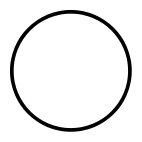
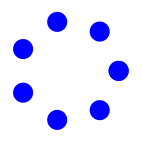
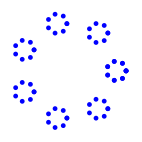
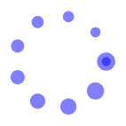

As described before, XRVG basically consists in a set of classes to compute and generate shapes in a SVG format. To effectively display the graphical result, you then need another tool which will "raster" the SVG output.
For the moment, Firefox will be sufficient.
As the world is round, let's begin with drawing a circle.
Luckily, XRVG provides for this need the Circle class. To produce the corresponding SVG output, you then just need to pass it to a SVGRender object.
This gives the following script :
|
 |
require 'xrvg' include XRVG render = SVGRender.new( :filename, "helloworldexpanded.svg" ) render.add( Circle.new ) render.end |
This example shows :
XRVG strives to provide default values as much as possible, and additional syntax sugar. As an illustration, the previous code could be rewritten as follows :
|
|
require 'xrvg' include XRVG SVGRender.[] do |render| render.add( Circle[] ) end |
This example shows :
Let's present a (very) little more complex example, to introduce some interesting XRVG features :
|
 |
require 'xrvg' include XRVG render = SVGRender[ :filename, "hellocrown.svg" ] Circle[].samples( 8 ) do |point| render.add( Circle[:center, point, :radius, 0.2 ], Style[ :fill, Color.blue ] ) end render.end |
Several things have to be noticed from this example:
As an appetizer, let's study the following example, which simply recurse the previous pattern on subcircles: fractals are at hand !!
|
 |
require 'xrvg' include XRVG render = SVGRender[ :filename, "hellocrownrecurse.svg" ] Circle[].samples( 8 ) do |point| Circle[:center, point, :radius, 0.2 ].samples( 8 ) do |point| render.add( Circle[:center, point, :radius, 0.05 ], Style[ :fill, Color.blue ] ) end end render.end |
To finish this first tutorial, let's introduce parallel enumeration on radius on previous example:
|
 |
require 'xrvg' include XRVG render = SVGRender[ :filename, "hellocrown2.svg" ] SyncS[Circle[], (0.2..0.1)].samples( 10 ) do |point, radius| render.add( Circle[:center, point, :radius, radius ], Style[ :fill, Color.blue( 0.5 ) ] ) end render.end |
As a bonus, you can see how specifying opacity on a basic color.
You can also notice the first and last sub circles, sharing the same center, as previously described.